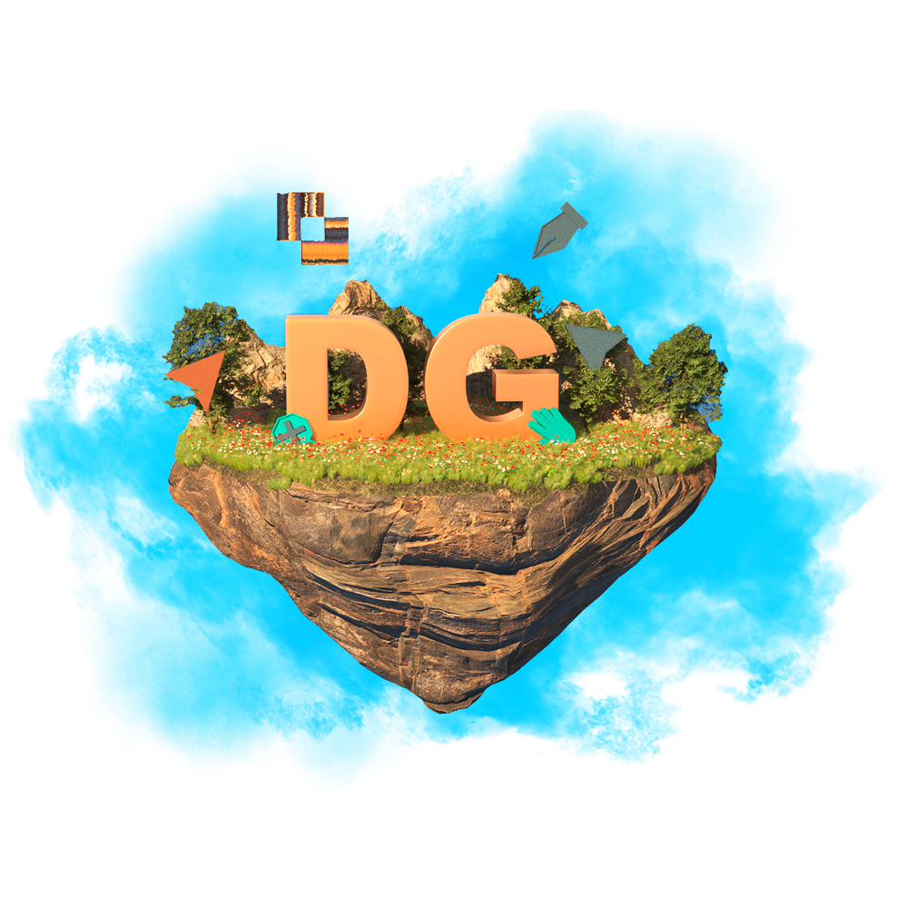
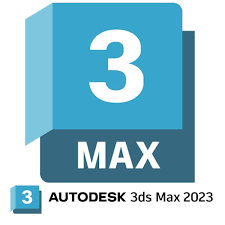
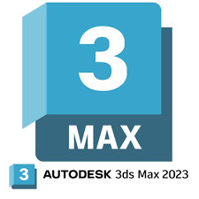

Diseño Gráfico.

Dirección de marketing digital.
Diseño Gráfico.
Dirección de marketing digital.

Embárcate en un viaje al viejo oeste a través de mi proyecto de modelado 3D: una auténtica cantina que cobra vida con la esencia del oeste. Inspirado por la página Quixel, cada objeto, desde el polvo en el suelo hasta los detalles de los muebles, refleja la rica historia del viejo oeste.
El proyecto tomó aproximadamente 8 días, con una dedicación promedio de 8 horas diarias. Durante este tiempo, enfrenté momentos de inspiración que aceleraron mi proceso y desafíos que me motivaron a superar mis límites creativos.

En mi proyecto residencial, decidí ir más allá de lo convencional y buscar asesoramiento directo del Ingeniero Civil Nicolás B. Careaga Chantes. Me reuní con él para obtener información sobre un plano de un residencial de tres niveles que estaba investigando. Este encuentro fue fundamental, ya que el ingeniero no solo me proporcionó el plano, sino que también me ofreció una valiosa explicación sobre cómo interpretar cada elemento en él.
El proyecto en sí abarcaba la comprensión y diseño de un residencial de tres niveles. Decidí dedicar 10 días a este proyecto, con una dedicación aproximada de 9 horas diarias.
 



El proceso de creación del rénder realista implicó la utilización del modelo de casa creado por Max Achkovsky, el cual descargué y modifiqué para adaptarlo a mis necesidades. Esta iniciativa fue parte de un proyecto personal en el que buscaba explorar mis habilidades en el renderizado realista y la visualización arquitectónica.